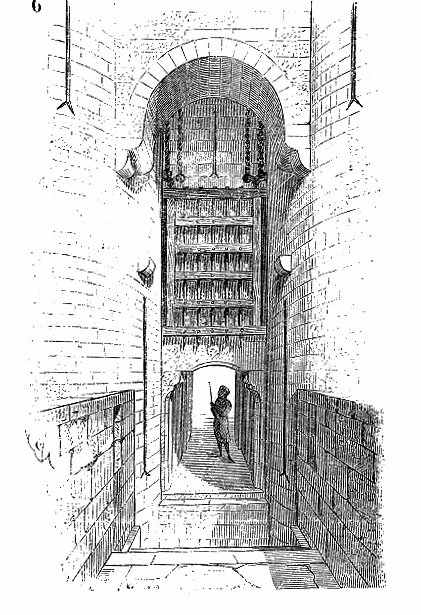

1
The road to Thornwick climbs out of the marsh as the light fails. Behind you the Gloamwater lies flat and black; ahead, a gatehouse squats across the way, its portcullis half raised like a lip about to speak.

Smoke rises from somewhere beyond the walls, though the wind is wrong for a hearth fire. Your hand finds the sealed letter inside your coat and stays there.
If you wish to use your Kai Discipline of Sixth Sense, turn to 14.
If you wish to approach the gatehouse openly, turn to 27.
If you wish to leave the road and skirt the walls through the reeds, turn to 38.